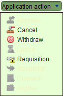

Record a Plan
SOLA integrates both the cadastral network and land registry into one application, replacing
both LRS and DCDB. When a new plan is submitted to the ministry for approval (i.e. Survey,
Complied, Registry, etc), the details from the plan must be recorded in SOLA before titles
over any new lots can be issued.
Lodge an Application
The first step to record a new plan is to lodge a new application in SOLA containing a
Record Plan service. This should be done while the surveyor (or their representative) is in
attendance so that you can provide them with the lodgment notice detailing the fees payable.
Steps
-
-
From the Dashboard select the
 New
application tool to open the Application Details screen.
New
application tool to open the Application Details screen.
-
On the General tab, select the surveyor as the Agent. Check the contact details for the
surveyor are appropriate and update if required. If the surveyor is not listed in the
drop down list, choose the Other Agent option at the top of the list and enter the
contact details for the surveyor in the fields provided.
-
Important: For some users the Application # field on the General tab may be
enabled. DO NOT enter a value into this field unless the plan was allocated a
number by LRS. For details, see the Record a Plan with an Application Number allocated
by LRS section.
-
On the Services tab, add the Record Plan service to the application.
-
On the Property tab, enter the folio references for the underlying parcels of the plan
(i.e. the parcels that will be extinguished by the plan) and add them to the
application using the Add property button. You should verify each property using
the
 Verify tool to confirm SOLA
contains the appropriate details to process the plan.
Verify tool to confirm SOLA
contains the appropriate details to process the plan.
-
On the Documents tab, record each of the physical documents provided by the surveyor.
At a minimum the Record Plan services requires a Plan document.
-
Ensure you select the appropriate document type and record the document date (i.e.
the date recorded on the face of the physical document) or today’ s date if the
physical document is not dated.
-
You can optionally enter a reference number for the document and a description. The
reference number should be taken from the physical document. If the physical
document does not have any reference number, then this field should be left blank.
-
The Source Agency is the name of the organization that created the physical
document. E.g. For the plan, the name of the surveyors firm or the surveyors name
can be entered here. This field is optional and can be left blank.
-
If you have scanned the document, use the Attachment field to link in the scanned
image. If you have not yet scanned the document, you will need to do this at a
later stage and link it into the document using the Edit Document functionality
available from Document Search.
-
On the Map points tab, navigate the map to the location of the plan and add one or more
application points using the
 Add Application Point tool.
Add Application Point tool.
-
On the Fees tab, enter the number of new lots that will be created by the plan and
click the
 Save button. This will lodge
the application and produce the lodgment notice. Print the notice and give it to the
surveyor (or their representative) as proof the application has been lodged. The
lodgment notice will indicate the fee to be paid for the application as well as the
date the application should be completed processing (30 days from the date of
lodgment).
Save button. This will lodge
the application and produce the lodgment notice. Print the notice and give it to the
surveyor (or their representative) as proof the application has been lodged. The
lodgment notice will indicate the fee to be paid for the application as well as the
date the application should be completed processing (30 days from the date of
lodgment).
Fee Payment
Once the lodgment notice is printed, the surveyor will need to take the notice to the
cashier in the finance section and arrange payment. When payment has been made, the cashier
will Open the application from the Unassigned
application list in the SOLA Desktop and check the Fee Paid flag on the Fees tab to indicate
the application can continue processing.
Open the application from the Unassigned
application list in the SOLA Desktop and check the Fee Paid flag on the Fees tab to indicate
the application can continue processing.
Assign the Application
Before work can begin on recording the plan information in SOLA, the application must first
get assigned to a QA user. Assignment of the application indicates that work on the plan is
underway.
Steps
-
-
From the SOLA Dashboard, check the Unassigned applications list to confirm the fee for
the application has been paid. If the fee has not been paid it will not be possible to
assign the application. In this situation contact the surveyor and/or cashier to
confirm the payment status for the application.
-
If the application fee has been paid, select the application in the Unassigned
applications list and click the
 Assign
tool. This will open the Application Assignment screen.
Assign
tool. This will open the Application Assignment screen.
-
Click the Assign button to assign the application. When the Assign action is complete,
you will be returned to the Dashboard and the assigned application will appear in your
Assigned applications list.
Typically users will only be able to assign applications to themselves (i.e. they will be
able to pull work), however team leaders will be able to manage the workload of their teams
and will be able to assign and reassign applications to other users. Note that the Un-assign andAssign tools can be
used reassign the application to another user if necessary
Un-assign andAssign tools can be
used reassign the application to another user if necessary
Manual Assessment
The QA user assigned to the application will perform the necessary manual checks to confirm
the plan complies with the appropriate survey regulations. If the assessment of the plan is
successful, the QA user can begin recording the details of the plan in SOLA using the Record
Plan service. If the assessment reveals issues with the plan that must be addressed by the
surveyor, then the plan will need to be requisitioned.
Requisitioning and Resubmitting the Plan
When the plan requires requisition it will be necessary to update the application in SOLA to
the Requisitioned status.
Steps
-
-
Confirm the plan requires requisition with the appropriate team leader.
-
Create the requisition notice describing the issues that need to be addressed by the
surveyor.
-
Open the application from the Assigned applications list in the Dashboard. Go to the
Documents tab and create a new Requisition Notice document with the requisition notice
as the attachment. Attaching the requisition notice to the application will ensure the
reasons for requisitioning the plan are recorded in SOLA.
-
Using the Application action dropdown, select the
 Requisition action. This will update the application
status to Requisitioned and remove the application from your Assigned applications
list. If the Requisition action is not enabled on the Application action dropdown,
confirm the application is assigned to you and that you have the Requisition
Application role by asking IT Services to check your SOLA User setup.
Requisition action. This will update the application
status to Requisitioned and remove the application from your Assigned applications
list. If the Requisition action is not enabled on the Application action dropdown,
confirm the application is assigned to you and that you have the Requisition
Application role by asking IT Services to check your SOLA User setup.

Application Action Dropdown
-
-
Dispatch the requisition notice to the surveyor so that they are aware of the items
that must be addressed. You can record that when the requisition notice is sent by
using the
 Dispatch action of the
Application action dropdown.
Dispatch action of the
Application action dropdown.
Once the surveyor addresses the items listed in the requisition notice, they will resubmit
the plan.
-
-
Use the
 Application search to locate
the plan andOpen it.
Application search to locate
the plan andOpen it.
-
Select
 action on the Application
action dropdown. This will move the application back to the Assigned applications list
ready for further processing.
action on the Application
action dropdown. This will move the application back to the Assigned applications list
ready for further processing.
It is possible the surveyor may choose to withdraw the survey following requisition. This
can be achieved by using the Withdraw action on the Application action dropdown.
Alternatively, if the plan remains on requisition for an extended period, and no further
information is provided by the surveyor, the application can be lapsed using the
Withdraw action on the Application action dropdown.
Alternatively, if the plan remains on requisition for an extended period, and no further
information is provided by the surveyor, the application can be lapsed using the Lapse action. Be
aware than once lapsed or withdrawn, the survey cannot be reinstated.
Lapse action. Be
aware than once lapsed or withdrawn, the survey cannot be reinstated.
Record Plan Service
The Record Plan service provides tools that allow you to modify the existing cadastral
network. The following describes the basic process flow for capturing plan information.
Variations to this basic flow are possible.
Steps
-
-
From the Dashboard,Open
the application from your Assigned applications list.
-
On the Services tab, select the Record Plan service and click the
 Start tool. This will open the Record Plan screen.
Start tool. This will open the Record Plan screen.
-
If the Map Viewer is not already zoomed to the location of the plan, use the map search
or the map navigation tools to locate the area of the plan.
-
Use the
 Select Target Parcel
tool to select (or deselect) the underlying parcels. If you have an image of the survey
plan, you can choose to add the plan image into the Map Viewer to assist with
digitizing coordinates.
Select Target Parcel
tool to select (or deselect) the underlying parcels. If you have an image of the survey
plan, you can choose to add the plan image into the Map Viewer to assist with
digitizing coordinates.
-
Capture the survey points for the plan. You can do this by using the
 Create / Link Survey Points tool to locate
survey points directly on the Map Viewer using the mouse, load new coordinates from a
survey data file or use the Survey Points screen to manually enter the new coordinate
details.
Create / Link Survey Points tool to locate
survey points directly on the Map Viewer using the mouse, load new coordinates from a
survey data file or use the Survey Points screen to manually enter the new coordinate
details.
-
Use theCreate / Link Survey
Points tool to link survey points that represent existing marks to the appropriate
target parcel nodes. This step is important because it ties the new survey data to the
underlying cadastral network. Once linked, a survey point will change from being a blue
plus to a green plus.
-
Use the Survey Points screen to identify any traverse points from the plan by
de-selecting/unchecking the Is boundary checkbox.
-
Create the new lots from the plan using the
 Create New Parcel tool. New lots will automatically
get assigned the plan number from the application. The lot number will also get
automatically assigned, however this may need to be manually updated using the Parcel
List screen.
Create New Parcel tool. New lots will automatically
get assigned the plan number from the application. The lot number will also get
automatically assigned, however this may need to be manually updated using the Parcel
List screen.
-
Use the
 Parcel List tool to open the
Parcel List screen and enter the Official area for each parcel as noted on the Plan.
The area should be entered in square meters only. SOLA automatically converts the
metric measurement to imperial acres, roods and perches for display.
Parcel List tool to open the
Parcel List screen and enter the Official area for each parcel as noted on the Plan.
The area should be entered in square meters only. SOLA automatically converts the
metric measurement to imperial acres, roods and perches for display.
-
Create, edit or remove any hydro parcels or road centerlines using the Spatial Feature
tools as indicated by the plan.
-
Once all of the relevant information from the plan has been captured into SOLA, return
to the Services tab of the Application Details screen, select the Record Plan Service
and click the
 Complete tool. This will
run the SOLA business rules to validate the application data. If there is a critical
failure, you must remedy the failure as it will not be possible to approve the
application otherwise.
Complete tool. This will
run the SOLA business rules to validate the application data. If there is a critical
failure, you must remedy the failure as it will not be possible to approve the
application otherwise.
Notes
-
-
UseSave on the Record Plan screen
regularly.
-
The act of saving and/or completing the service will cause the SOLA business rules to
run validating the state of the data. If you receive rule failures, check Appendix 1 –
SOLA Business Rules to determine how those failures can be remedied.
-
Additional information on using the Record Plan tools can be found in the Record Plan
section.
Approving the Plan
The changes you make to the cadastral network while recording new plan information remain
pending until the application is approved. Survey approval in SOLA can be achieved using
the Approve
action in the Application action dropdown, however in Samoa the MNRE CEO or ACEO must sign
the survey plan to officially approve it.
Approve
action in the Application action dropdown, however in Samoa the MNRE CEO or ACEO must sign
the survey plan to officially approve it.
Steps
-
-
Take the survey plan to the CEO or ACEO for signing and approval.
-
Once the plan is officially approved, scan the plan with the CEO’s or ACEO’s signature
and attach the scanned image to the Plan document of the application.
-
Open the application from your Assigned applications list and use the
 Validate tool to check the status of the
application data. If there are any rule failures, review the application data and
correct the issues as appropriate before proceeding to approve the application.
Validate tool to check the status of the
application data. If there are any rule failures, review the application data and
correct the issues as appropriate before proceeding to approve the application.
-
Use theApprove action in the
Application action dropdown to approve the application. This will update the status of
the application to Approved as well as update the cadastral network with the
information captured from the plan.
-
If the approve action is successful it will generate an Approval notice. Print the
Approval notice and get this signed by a team leader.
-
Dispatch the approval notice and any other relevant information to the surveyor to
notify them of the approval. You can record that when the approval notice is sent by
using theDispatch action of the
Application action dropdown.
Lodge Application to Create New Titles
Once the approval notice is sent to the surveyor, it is necessary to create a second
application that will be used by Land Registration to create the titles for the new lots
created by the plan as well as cancel the titles that were superseded by the new lots. If
there are no new lots created on the plan and no titles to cancel, you can simply Archive the application
used to process the plan and skip the steps described below.
Archive the application
used to process the plan and skip the steps described below.
Steps
-
-
From the Dashboard select theNew
application tool to open the Application Details screen.
-
On the General tab, enter the Agent details as noted on the application used to process
the plan.
-
On the Services tab add a Cancel Title service if there are properties that must be
cancelled as a result of the new plan (i.e. properties to cancel for the parcels
extinguished by the plan). Only one Cancel Title service is required regardless of the
number of properties that are to be cancelled.
-
On the Services tab, add a Create New Title service for each new lot on the plan that
requires a title. E.g. if there are 5 lots on the plan that require new titles, add 5
Create New Title services to the application.
-
On the Property tab, enter the folio references for the underlying parcels of the plan
and add them to the application using the Add property button.
-
Important: On the Documents tab, create a Plan document and use the Document
search to link to the approved plan image that should be recorded on the application
used to process the plan. The approved plan image will be used by Land Registration to
determine the titles for the new lots.
-
On the Map points tab, you can optionally navigate the map to the location of the plan
and add one or more application points using theAdd Application Point tool.
-
On the fees tab, check the Fee Paid checkbox as the Create New Title service does not
incur any fees, then click theSave
button. This will lodge the application and produce the lodgment notice. You can close
the lodgment notice without printing it. If you do not have permission to check the Fee
Paid checkbox, save the application and arrange for a person with the appropriate
privilege to do this for you.
-
Once the Land Registration application has been lodged, open the application used to
process the plan and archive it using theArchive action in the Application action dropdown.